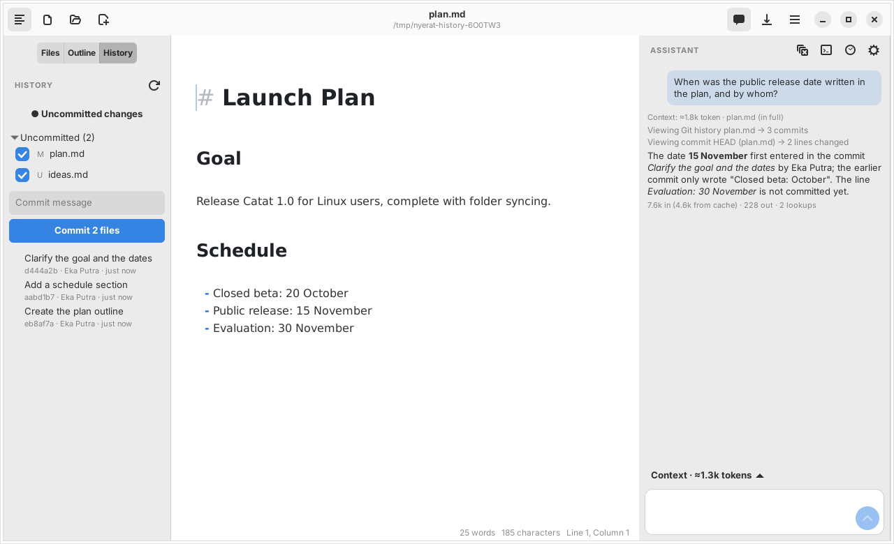

Agent
Browsing files and Git
The initial context only holds the parts that are chosen automatically. For the rest, the agent browses the workspace by itself with read-only tools that run right away without approval.
File read tools
| Tool | Function |
|---|---|
list_files | The list of Markdown files in the work folder with their word counts and headings |
search_documents | Search sections of files by topic (BM25) |
search_text | Search for exact text, e.g. a name, a date, or a number |
read_file | Read the contents of a file by line range, with line numbers |
For a question like “is there a meeting decision that has not made it into the launch plan?”, the agent searches for every occurrence of the topic, reads the surrounding parts, and then answers with quotes of the file and the line number.
- An open document is read from the editor contents, not from the disk.
- Only Markdown files in the work folder are read.
- Every result is limited to 6,000 tokens, and the total read results to the size of the context budget.
- The tools only exist when the Other files in the folder switch is on.
Git history tools
When the work folder is a Git repository, the agent can also read its history:
| Tool | Function |
|---|---|
git_log | The latest commits for the whole folder or one file (following renames), with the files that changed |
show_commit | The diff of one commit |
file_at_commit | The contents of a file at an old commit, including files that were deleted |
A question like “when was the release date changed and by whom?” is answered from the history.

git is run in the work folder with a pathspec that only covers non-hidden Markdown files. A commit may only be a hash or HEAD~n. No git command that changes the repository is available.
Tips
- The search is keyword-based, not meaning-based. Mention terms that really exist in the manuscript so the agent finds them quickly.
search_textdoes not recognize synonyms or different spellings.- A broad question takes more rounds and tokens. Attach a file with
@when you already know where it is.